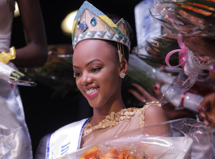

The past crown Miss Rwanda
Rwanda a country of thousand hills is one of the admired countries in the world for
having beautiful ladies.Beauty, skills, expressions and content are the leading
criteria for becoming Miss Rwanda.
UWERA Dalila
The first young lady known to have been crowned as Miss Rwanda in the history of the
country is Miss Uwera Dalila. She won this crown on December 17 in 1993 and served
as Miss for a short period before a tragic history that occurred in Rwanda in 1994.
Since then the competition stopped.
BAHATI Grace
After 17 years, the Ministry of Sports and Culture; MINISPOC, re-launched the Miss
Rwanda competition; it was on 19th December in 2009 in . This time, Bahati Grace
became the first lucky girl to be crowned as Nyampinga. The second one, Rwanda has
had in History. Today, Bahati Grace lives in The United States of America.
MUTESI KAYIBANDA Aurore

The third edition of Miss Rwanda happened in three years after the second.
It was in 2012 when Mutesi Kayibanda Aurore gets crowned as the Queen of culture,
beauty and aptitude, in a hot contest that took place at the Gikondo Expo Grounds on
September 1st 2012. Miss Kayibanda Aurore served as Miss Rwanda for two years.
She lives in The United States of America.,
AKIWACU Colombe

Akiwacu Colombe, the fourth Miss Rwanda since the beginning of this competition.
She was crowned on February 22nd in 2014 at Petit Stade. Today she studies in France.
KUNDWA Doriane
One year after, Kundwa Doriane become the successor. Doriane was crowned as
Miss Rwanda 2015 in a ceremony that took place in Serena Hotel on February 22nd 2015.
MUTESI Jolly
The History of Miss Rwanda made Mutesi Jolly the 6th. It was in the final ceremony that
took place in February 27th 2016.